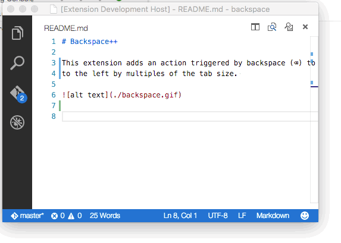
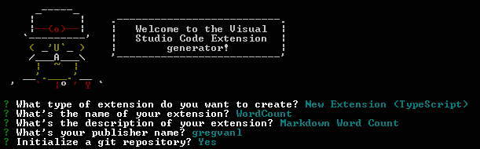
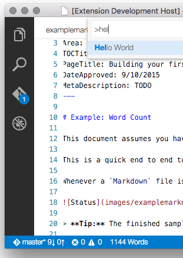
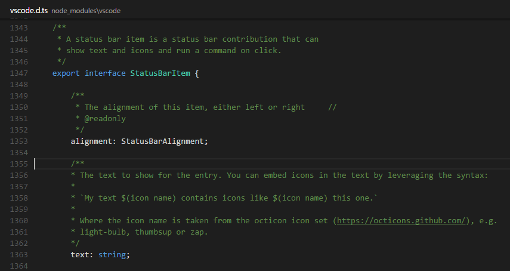

示例 - 单词数统计 Example - Word Count
这篇文章假定你已经读了之前讲述VS Code插件基本知识的文章你的第一个插件。
单词数统计是一篇手把手教你怎样创建一个用来辅助编写Markdown的插件的的教程，在你了解这个插件所有的运行细节前，让我们先看一下这个插件的核心功能的效果演示。
只要当Markdown文件正在被编辑，状态栏上就会添加文档单词数的信息。这个信息将随着你的键入或者打开其他文件而随之变化：

小贴士：这个完整的插件实例在这个GitHub仓库，如果你有任何的问题可以在这里提出来。
This document assumes you have read Your First Extension which covers the basics of VS Code extensibility.
Word Count is an end to end tutorial to show you how to create an extension to aid in Markdown authoring. Before we get into how all of this works, let's have a quick demo of the core features you will be building so you know what to expect.
Whenever a Markdown file is edited, a status bar message is added. The message includes the current word count and updates as you type and move from file to file:
Tip: The finished sample is available from this GitHub repository should you have any issues.
概述 Overview
这个例子将分三节来告诉你一系列相关联的概念：
首先确保你已经安装了最新的VS Code插件生成器并运行它：
npm install -g yo generator-code
yo code
这将会打开插件生成器 - 我们选择TypeScript New Extension选项。现在同样简单地填写下方图片上完成填写的那些成员（使用'WordCount'作为插件的名字并且用你的名字作为发布者）。

现在你可以在生成器描述的输出目录里打开VS Code：
cd WordCount
code .
This example has three sections which will take you through a set of related concepts:
- Update the Status Bar - display custom text in the VS Code
Status Bar - Subscribing to Events - updating the
Status Barbased on editor events - Disposing Extension Resources - release resources like event subscriptions or UI handles
First make sure you have the latest VS Code extension generator installed then run it:
npm install -g yo generator-code
yo code
This will open up the extension generator - we will base this example on the TypeScript New Extension option. For now, simply fill in the fields the same way you see them completed in the image below (using 'WordCount' as the extension name and your own name as the publisher).
You can now open VS Code as described in the generator output:
cd WordCount
code .
运行插件 Run the Extension
在我们继续下一步之前，我们可以先按下kb(workbench.action.debug.start)运行一下插件以确保到目前为止一切正常。如同你在之前"Hello World"教程中看到的那样，VS Code加载插件后打开另一个窗口（[扩展开发主机]窗口）。你应该在命令面板找到"Hello World"命令（按下kb(workbench.action.showCommands)）并选择它，你将会在看到窗口顶部看到一个显示"Hello World"的消息提示框。
现在你已经确定了插件可以正常的运行，如果你喜欢你可以让插件开发窗口保持打开 。接下来你可以在开发窗口中再次按下kb(workbench.action.debug.continue)或者按下kbstyle(Ctrl+R) (Mac: kbstyle(Cmd+R))来重新加载插件开发窗口以确定你对插件的修改生效了。
Before we go on, we can run the extension to make sure everything works as expected by pressing kb(workbench.action.debug.start). As you saw in the previous "Hello World" walkthrough, VS Code opens another window (the [Extension Development Host] window) in which your extension will be loaded. You should find the "Hello World" command in the Command Palette (press kb(workbench.action.showCommands)) and when you select it, you will see an information box at the top of the window saying "Hello World".
Now that you have confirmed that the extension is running properly, you can keep the extension development window open if you like. To test out any changes that you make to your extension, you can either press kb(workbench.action.debug.continue) again in the development window or reload the extension development window by pressing kbstyle(Ctrl+R) (Mac: kbstyle(Cmd+R)).
更新状态栏 Update the Status Bar
将生成的extension.ts文件内容替换成下面展示的代码。代码声明并实例化了一个可以统计单词数并且显示在VS Code状态栏上的WordCounter类。当"Hello Word"命令被调用的时候将调用updateWordCount函数。
// 'vscode'模块包括VS Code插件API
// 导入下面代码使用的必备的插件类型
import {window, commands, Disposable, ExtensionContext, StatusBarAlignment, StatusBarItem, TextDocument} from 'vscode';
// 这个函数将在你的插件被激活时被调用，激活是由定义在
// package.json文件中的activation events定义的
export function activate(context: ExtensionContext) {
// 使用控制台去输出诊断信息(console.log)和错误信息(console.error)
// 只有当你的插件被激活时才会执行下面这行代码
console.log('Congratulations, your extension "WordCount" is now active!');
// 创建一个新的单词数统计对象
let wordCounter = new WordCounter();
var disposable = commands.registerCommand('extension.sayHello', () => {
wordCounter.updateWordCount();
});
// 添加到当插件关闭时被清理的可清理列表
context.subscriptions.push(wordCounter);
context.subscriptions.push(disposable);
}
class WordCounter {
private _statusBarItem: StatusBarItem;
public updateWordCount() {
// 创建所需的状态栏元素
if (!this._statusBarItem) {
this._statusBarItem = window.createStatusBarItem(StatusBarAlignment.Left);
}
// 得到当前的文本编辑器
let editor = window.activeTextEditor;
if (!editor) {
this._statusBarItem.hide();
return;
}
let doc = editor.document;
// 只有当是Markdown文件的时候才更新状态
if (doc.languageId === "markdown") {
let wordCount = this._getWordCount(doc);
// 更新状态栏
this._statusBarItem.text = wordCount !== 1 ? `${wordCount} Words` : '1 Word';
this._statusBarItem.show();
} else {
this._statusBarItem.hide();
}
}
public _getWordCount(doc: TextDocument): number {
let docContent = doc.getText();
// 去除多余的空格以方便与分割
docContent = docContent.replace(/(< ([^>]+)<)/g, '').replace(/\s+/g, ' ');
docContent = docContent.replace(/^\s\s*/, '').replace(/\s\s*$/, '');
let wordCount = 0;
if (docContent != "") {
wordCount = docContent.split(" ").length;
}
return wordCount;
}
dispose() {
this._statusBarItem.dispose();
}
}
现在让我们试一下我们的修改有什么效果
我们定义了监视TypeScript文件修改并编译的任务(在插件的.vscode\tasks.json文件里)，所以我们无需手动重新构建。只需要在运行的的代码的[扩展开发主机]窗口里简单的按下kbstyle(Ctrl+R)就会重新加载插件（你也可以在主开发窗口按kb(workbench.action.debug.start) ）。我们依然需要像之前"Hello World"命令那样激活修改后的代码。如果你现在打开的是Markdown文件，你的状态栏上将会显示单词数统计。

现在我们已经有了一个好的开始，但是统计还不能随着文件内容的修改而变化。
Replace the contents of the generated extension.ts file with the code shown below. It declares and instantiates a WordCounter class which can count words and shows them in the VS Code Status Bar. The "Hello Word" command will call updateWordCount when invoked.
// The module 'vscode' contains the VS Code extensibility API
// Import the necessary extensibility types to use in your code below
import {window, commands, Disposable, ExtensionContext, StatusBarAlignment, StatusBarItem, TextDocument} from 'vscode';
// This method is called when your extension is activated. Activation is
// controlled by the activation events defined in package.json.
export function activate(context: ExtensionContext) {
// Use the console to output diagnostic information (console.log) and errors (console.error).
// This line of code will only be executed once when your extension is activated.
console.log('Congratulations, your extension "WordCount" is now active!');
// create a new word counter
let wordCounter = new WordCounter();
var disposable = commands.registerCommand('extension.sayHello', () => {
wordCounter.updateWordCount();
});
// Add to a list of disposables which are disposed when this extension is deactivated.
context.subscriptions.push(wordCounter);
context.subscriptions.push(disposable);
}
class WordCounter {
private _statusBarItem: StatusBarItem;
public updateWordCount() {
// Create as needed
if (!this._statusBarItem) {
this._statusBarItem = window.createStatusBarItem(StatusBarAlignment.Left);
}
// Get the current text editor
let editor = window.activeTextEditor;
if (!editor) {
this._statusBarItem.hide();
return;
}
let doc = editor.document;
// Only update status if an MarkDown file
if (doc.languageId === "markdown") {
let wordCount = this._getWordCount(doc);
// Update the status bar
this._statusBarItem.text = wordCount !== 1 ? `${wordCount} Words` : '1 Word';
this._statusBarItem.show();
} else {
this._statusBarItem.hide();
}
}
public _getWordCount(doc: TextDocument): number {
let docContent = doc.getText();
// Parse out unwanted whitespace so the split is accurate
docContent = docContent.replace(/(< ([^>]+)<)/g, '').replace(/\s+/g, ' ');
docContent = docContent.replace(/^\s\s*/, '').replace(/\s\s*$/, '');
let wordCount = 0;
if (docContent != "") {
wordCount = docContent.split(" ").length;
}
return wordCount;
}
dispose() {
this._statusBarItem.dispose();
}
}
Now let's try our updates to the extension.
We have the compilation of the TypeScript file set on a watch (in the extension's .vscode\tasks.json file) so there is no need to re-build. Simply hit kbstyle(Ctrl+R) in the [Extension Development Host] window where your code is running and the extension will reload (you can also just kb(workbench.action.debug.start) from your primary development window). We still need to activate the code in the same way as before with the "Hello World" command. Assuming you are in a Markdown file, your Status Bar will display the word count.
This is a good start but it would be cooler if the count updated as your file changed.
订阅事件 Subscribing to Events
让我们用一个辅助类来监听这一系列的事件。
onDidChangeTextEditorSelection- 当光标位置改变时触发这个事件onDidChangeActiveTextEditor- 当被激活的编辑器发生改变时触发这个事件
要完成这一切，我们需要向extension.ts文件里添加一个新类。这个类将订阅这些事件并且让WordCounter对象去更新单词统计数，同时注意这个类在自己被销毁时怎样去停止监听和怎样去管理这些订阅的销毁。
在extension.ts文件的底部加入下方显示的代码来添加WordCounterController类。
class WordCounterController {
private _wordCounter: WordCounter;
private _disposable: Disposable;
constructor(wordCounter: WordCounter) {
this._wordCounter = wordCounter;
this._wordCounter.updateWordCount();
// 订阅选择区域变化和编辑器激活事件
let subscriptions: Disposable[] = [];
window.onDidChangeTextEditorSelection(this._onEvent, this, subscriptions);
window.onDidChangeActiveTextEditor(this._onEvent, this, subscriptions);
// 更新当前文件的的单词数
this._wordCounter.updateWordCount();
// 从这些事件订阅中创建一个Disposable类型的集合
this._disposable = Disposable.from(...subscriptions);
}
dispose() {
this._disposable.dispose();
}
private _onEvent() {
this._wordCounter.updateWordCount();
}
}
现在我们不再想让单词数统计插件在调用命令时才被加载，而是在打开任何一个Markdown文件的时候就可以被加载。
首先，用下面的代码替换activate函数
// 使用控制台去输出诊断信息(console.log)和错误信息(console.error)
// 只有当你的插件被激活时才会执行下面这行代码
console.log('Congratulations, your extension "WordCount" is now active!');
// 创建一个新的单词数统计对象
let wordCounter = new WordCounter();
let controller = new WordCounterController(wordCounter);
// 添加到当插件关闭时被清理的可清理列表
context.subscriptions.push(controller);
context.subscriptions.push(wordCounter);
接下来我们需要确保当Markdown文件被打开时加载插件。为了实现这一点，我们需要修改package.json文件。之前我们的插件激活基于extension.sayHello命令，我们现在不需要了，所以我们可以从package.json文件里删除contributes属性的条目:
"contributes": {
"commands":
[{
"command": "extension.sayHello",
"title": "Hello World"
}
]
},
现在来修改你的插件，通过更新activationEvents属性来实现当打开一个Markdown文件时激活插件：
"activationEvents": [
"onLanguage:markdown"
]
这种onLanguage:${language}事件接受一个语言id，此处是“markdown”，这个事件将在这种语言的文件被打开时产生、、
通过kbstyle(Ctrl+R)或者kb(workbench.action.debug.start)重新加载窗口来运行插件然后开始编辑一个Markdown文件。你现在应该已经拥有了一个实时的单词数统计。
如果你在activate函数里设置了断点，只有当第一个Markdown文件被打开时你会收到通知。那时WordCountController类的构造函数将会运行并且订阅编辑器的事件以便于在Markdown文件被打开或者内容被修改时调用updateWordCount函数。
Let's hook your helper class up to a set of events.
onDidChangeTextEditorSelection- Event is raised as the cursor position changesonDidChangeActiveTextEditor- Event is raised as the active editor changes.
To do this, we'll add a new class into the extension.ts file. It will set up subscriptions to those events and ask the WordCounter to update the word count. Also note how this class manages the subscription as Disposables and how it stops listing when being disposed itself.
Add the WordCounterController as shown below to the bottom of the extension.ts file.
class WordCounterController {
private _wordCounter: WordCounter;
private _disposable: Disposable;
constructor(wordCounter: WordCounter) {
this._wordCounter = wordCounter;
this._wordCounter.updateWordCount();
// subscribe to selection change and editor activation events
let subscriptions: Disposable[] = [];
window.onDidChangeTextEditorSelection(this._onEvent, this, subscriptions);
window.onDidChangeActiveTextEditor(this._onEvent, this, subscriptions);
// update the counter for the current file
this._wordCounter.updateWordCount();
// create a combined disposable from both event subscriptions
this._disposable = Disposable.from(...subscriptions);
}
dispose() {
this._disposable.dispose();
}
private _onEvent() {
this._wordCounter.updateWordCount();
}
}
We no longer want the Word Count extension to be loaded when a command is invoked but instead be available for each Markdown file.
First, replace the body of the activate function with this:
// Use the console to output diagnostic information (console.log) and errors (console.error).
// This line of code will only be executed once when your extension is activated.
console.log('Congratulations, your extension "WordCount" is now active!');
// create a new word counter
let wordCounter = new WordCounter();
let controller = new WordCounterController(wordCounter);
// Add to a list of disposables which are disposed when this extension is deactivated.
context.subscriptions.push(controller);
context.subscriptions.push(wordCounter);
Second, we must make sure the extension is activated upon the opening of a Markdown file. To do this, we'll need to modify the package.json file. Previously the extension was activated via the extension.sayHello command which we no longer need and so we can delete the entire contributes attribute from package.json:
"contributes": {
"commands":
[{
"command": "extension.sayHello",
"title": "Hello World"
}
]
},
Now change your extension so that it is activated upon the opening of a Markdown file by updating the activationEvents attribute to this:
"activationEvents": [
"onLanguage:markdown"
]
The onLanguage:${language} event takes the language id, in this case "markdown", and will be raised whenever a file of that language is opened.
Run the extension by either doing a window reload kbstyle(Ctrl+R) or with kb(workbench.action.debug.start) and then start editing a Markdown file. You should now should have a live updating Word Count.
If you set a breakpoint on the activate function, you'll notice that it is only called once when the first Markdown file is opened. The WordCountController constructor runs and subscribes to the editor events so that the updateWordCount function is called as Markdown files are opened and their text changes.
自定义的状态栏 Customizing the Status Bar
我们已经看到了怎样在状态栏上显示格式化的文字。VS Code允许你自定义状态栏，甚至进一步增加颜色、图标、工具提示等等。使用智能提示，你就可以看到很多种StartBarItem成员。另一个学习VS Code插件API的好方法是包含在你生成的插件项目里的vscode.d.ts类型文件，在编辑器里打开node_modules\vscode\vscode.d.ts文件，你就可以看到完整的VS Code插件API和注释。

使用下面的代码来替换StatusBarItem：
// 更新状态栏
this._statusBarItem.text = wordCount !== 1 ? `$(pencil) ${wordCount} Words` : '$(pencil) 1 Word';
this._statusBarItem.show();
在计算出来的单词数的左边显示一个GitHub Octicon上的铅笔图标。

We've seen how you can display formatted text on the Status Bar. VS Code allows you to customize your Status Bar additions even further with color, icons, tooltips and more. Using IntelliSense, you can see the various StartBarItem fields. Another great resource for learning about the VS Code extensibility APIs is the vscode.d.ts typings file included in your generated Extension project. Open node_modules\vscode\vscode.d.ts in the editor, you'll see the complete VS Code extensibility API with comments.
Replace the StatusBarItem update code with:
// Update the status bar
this._statusBarItem.text = wordCount !== 1 ? `$(pencil) ${wordCount} Words` : '$(pencil) 1 Word';
this._statusBarItem.show();
to display a GitHub Octicon pencil icon to the left of the calculated word count.
销毁插件资源 Disposing Extension Resources
我们将在销毁里更深入的而学习如何销毁插件。
一个插件在激活的时候传入一个有Disposable集合类型的subscriptions的ExtensionContext对象。你的插件可以向这个集合中添加自己的可销毁对象，VS Code将在插件关闭时销毁这些对象。
许多创建工作空间或者UI对象的VS Code的API(类似registerCommand)都会返回一个Disposable对象，插件可以调用这些销毁接口来从VS Code里移除这些元素。
Events are another example where onDid* event subscriber methods return a Disposable. Extensions unsubscribe to an event by disposing the event's Disposable. In our example, WordCountController handles the event subscription Disposables directly by keeping its own Disposable collection which it cleans up on deactivation.
// 订阅选择区域变化和编辑器激活事件
let subscriptions: Disposable[] = [];
window.onDidChangeTextEditorSelection(this._onEvent, this, subscriptions);
window.onDidChangeActiveTextEditor(this._onEvent, this, subscriptions);
// 从这些事件订阅中创建一个Disposable类型的集合
this._disposable = Disposable.from(...subscriptions);
Now we'll take a deeper look at how extensions should handle VS Code resources through Disposables.
When an extension is activated, it is passed an ExtensionContext object which has a subscriptions collection of Disposables. Extensions can add their Disposable objects to this collection and VS Code will dispose of those objects when the extension is deactivated.
Many VS Code APIs which create workspace or UI objects (e.g. registerCommand) return a Disposable and extensions can remove these elements from VS Code by calling their dispose method directly.
Events are another example where onDid* event subscriber methods return a Disposable. Extensions unsubscribe to an event by disposing the event's Disposable. In our example, WordCountController handles the event subscription Disposables directly by keeping its own Disposable collection which it cleans up on deactivation.
// subscribe to selection change and editor activation events
let subscriptions: Disposable[] = [];
window.onDidChangeTextEditorSelection(this._onEvent, this, subscriptions);
window.onDidChangeActiveTextEditor(this._onEvent, this, subscriptions);
// create a combined disposable from both event subscriptions
this._disposable = Disposable.from(...subscriptions);
本地安装你的插件 Installing your Extension Locally
到目前为止，你写的插件运行在一个特殊的of VS Code实例-插件开发主机实例。为了让你的插件对于所有的VS Code实例都能使用，复制你的插件目录内容到一个你的.vscode/extensions目录下的新目录。
So far, the extension you have written only runs in a special instance of VS Code, the Extension Development Host instance. To make your extension available to all VS Code instances, copy the extension folder contents to a new folder under your .vscode/extensions folder.
发布你的插件 Publishing your Extension
阅读怎样共享一个插件。
Read about how to Share an Extension.
下一步 Next Steps
阅读下面这些文档:
- 生成代码 - 学习Yo Code里的其他选项
- 插件API - 查看插件API概述
- 定制化 - 这题，设置和键盘绑定
- 发布工具 - 学习怎样发布一个插件到公共市场里
- 编辑器API - 学习更多的关于文本文档，文本编辑器，和编辑文本的知识
Read on to find out about:
- Yo Code - learn about other options in Yo Code
- Extension API - Get an overview of the Extension API
- Customization - Themes, settings and keyboard bindings
- Publishing Tool - Learn how to publish an extension to the public Marketplace
- Editor API - Learn more about Text Documents, Text Editors and editing text
常见问题 Common Questions
无
Nothing yet